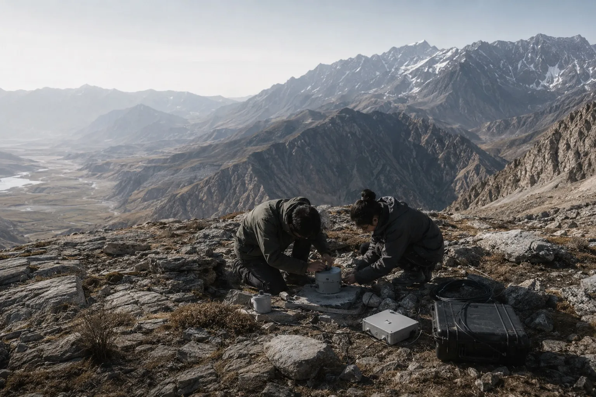

区域地震活动
研究地震活动的时空分布、震源特征及其与活动构造之间的联系。
地震目录 / 震源特征 / 活动构造 成都理工大学地震研究中心EARTHQUAKE CENTER
成都理工大学地震研究中心EARTHQUAKE CENTER

成都理工大学地震研究中心立足地球物理学科，关注地震活动与深部构造之间的联系，结合地震观测、数据分析与结构成像，认识地球内部结构及相关动力过程。
研究区域主要面向青藏高原东缘、龙门山断裂带、四川盆地及邻区。同时探索智能方法在文献整理、数据处理与科研协作中的应用，逐步建设面向科研与教学的工作平台。
关注地震学与深部结构研究，交流研究成果、方法与学术进展。
记录学术交流、团队活动、科研工作与教学实践。
关注重要地震事件，汇集事件信息与相关研究资料。
震级描述地震本身的大小；烈度描述某一地点受到地震影响的程度。同一次地震在不同地点的烈度可以不同。
震源是地下发生地震的起始位置，震中是震源在地表的垂直投影位置。震源深度是震源到地表的垂直距离。
地震仪记录地面运动随时间的变化，形成地震波形。研究人员利用波形分析地震事件和地球内部结构。
地震台连接地面运动观测与地震学研究。从观测记录、波形资料到地震事件，连接地震数据浏览、波形分析与基础知识学习。
通过观测资料认识地震波传播，结合事件信息开展分析，并服务于地震学知识的学习与交流。
研究地震活动的时空分布、震源特征及其与活动构造之间的联系。
地震目录 / 震源特征 / 活动构造利用地震波传播信息，认识地壳与上地幔结构及其横向差异。
地壳结构 / 地震成像 / 构造解释围绕连续波形与事件记录，开展数据整理、信号分析与可视化。
波形质量 / 信号分析 / 数据处理探索人工智能在文献检索、证据整理与科研工作流程中的应用。
文献研究 / 知识整理 / 科研工具中心主任
固体地球物理学教授
固体地球物理学副教授
固体地球物理学教授
固体地球物理学围绕区域地震、深部结构、数据处理与文献智能开展交流。招生信息请以学院正式通知为准。
学术交流 · 科研合作 · 人才培养
四川省成都市成华区二仙桥东三路 1 号
成都理工大学地球物理学院